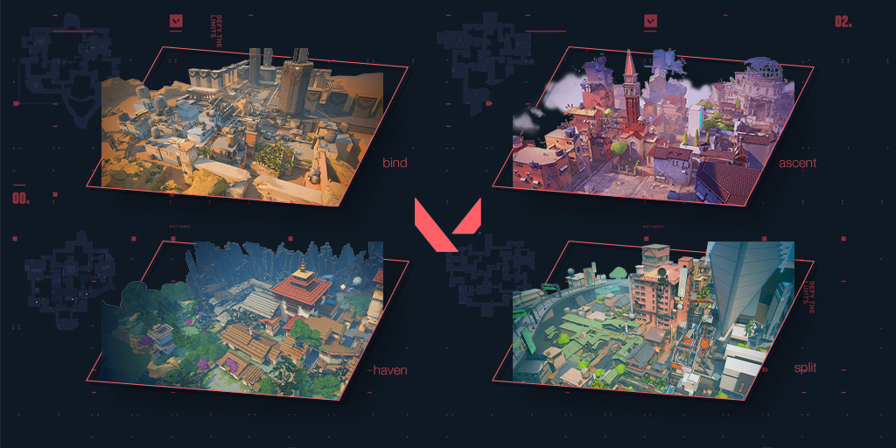
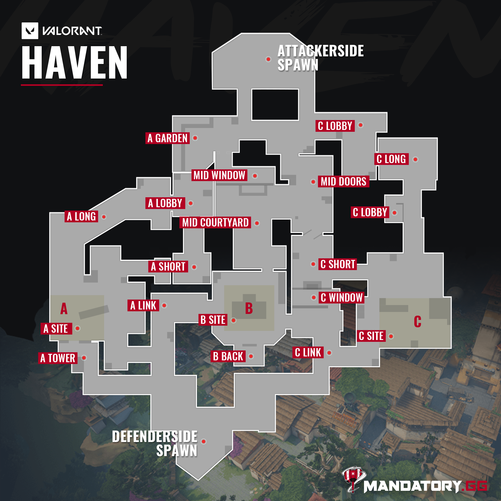
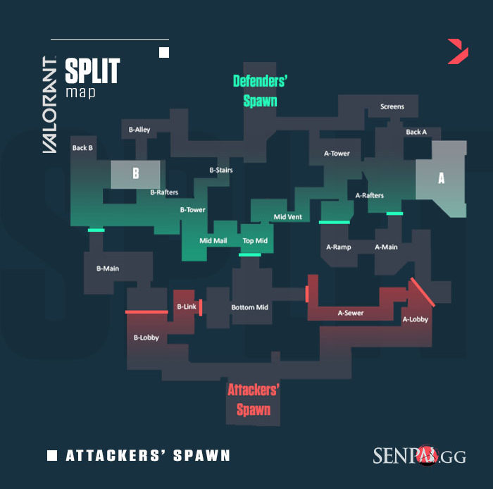
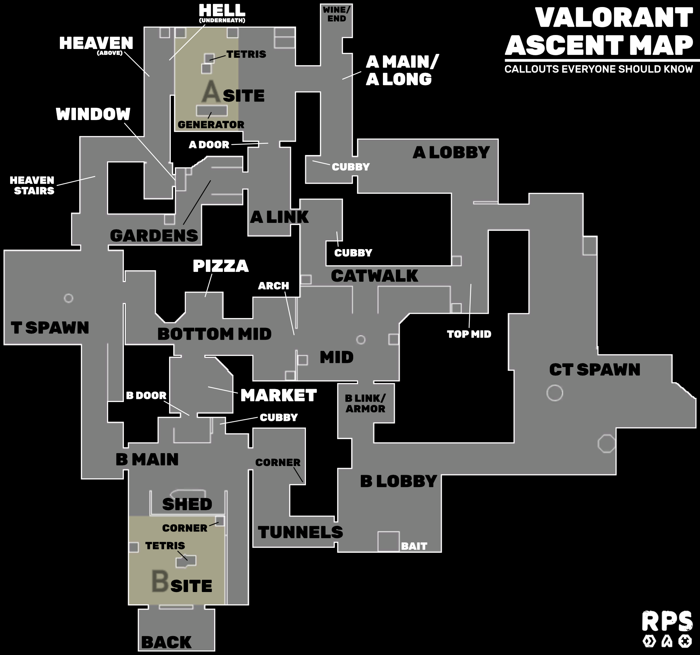
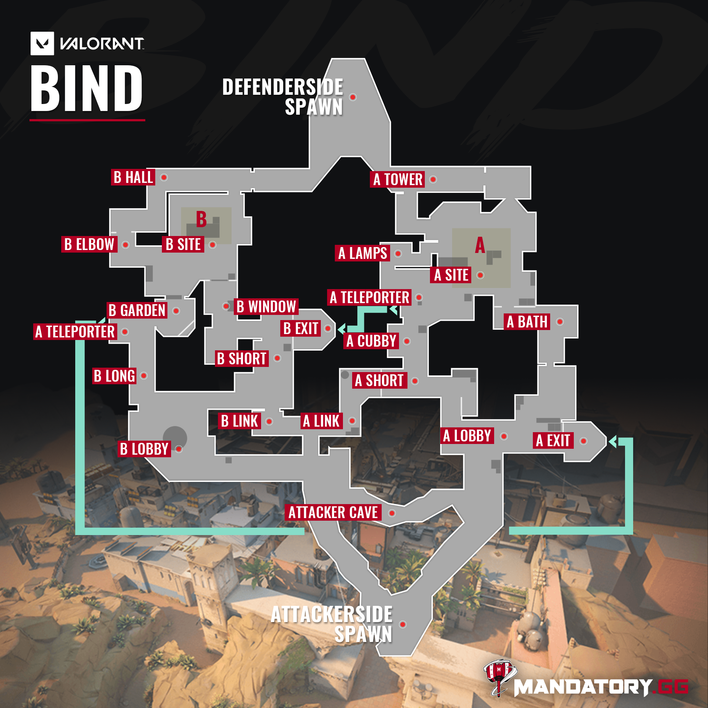
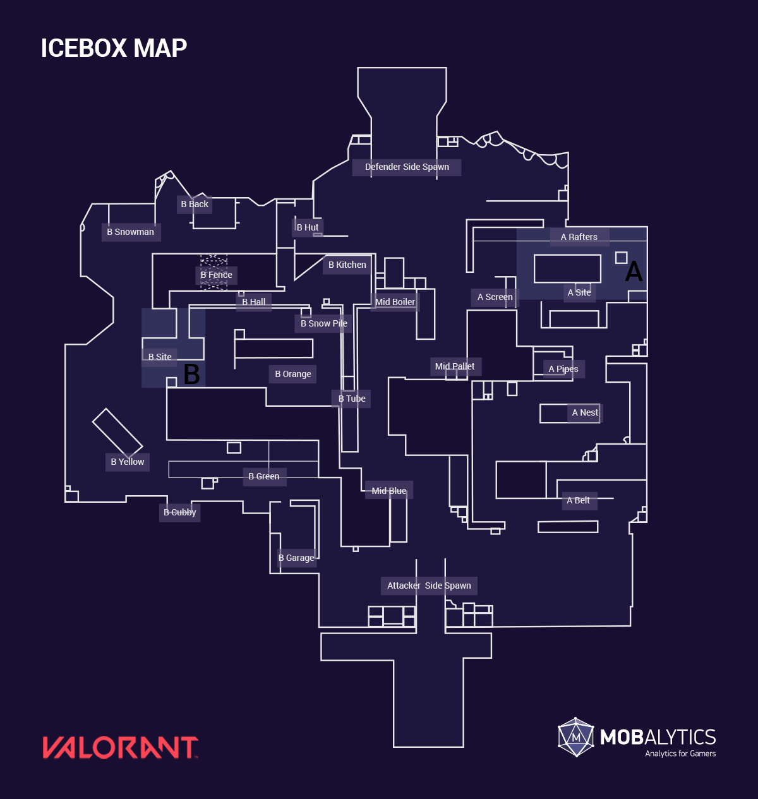

Learning Maps
One of the most significant things to learn and have knowledge about in Valorant is maps and their callouts, especially in competitive.
If you are not familiar with the maps' callouts, take a moment and start memorizing important spots to call to your teammates.
Haven
Beneath a forgotten monastery, a clamour emerges from rival Agents clashing to control three sites. There’s more territory to control, but defenders can use the extra real estate for aggressive pushes.
Split
If you want to go far, you’ll have to go up. A pair of sites split by an elevated center allows for rapid movement using two rope ascenders. Each site is built with a looming tower vital for control. Remember to watch above before it all blows sky-high.
Ascent
Bind
Two sites. No middle. Gotta pick left or right. What’s it going to be then? Both offer direct paths for attackers and a pair of one-way teleporters make it easier to flank.
Icebox
Your next battleground is a secret Kingdom excavation site overtaken by the arctic. The two plant sites protected by snow and metal require some horizontal finesse. Take advantage of the ziplines and they’ll never see you coming
